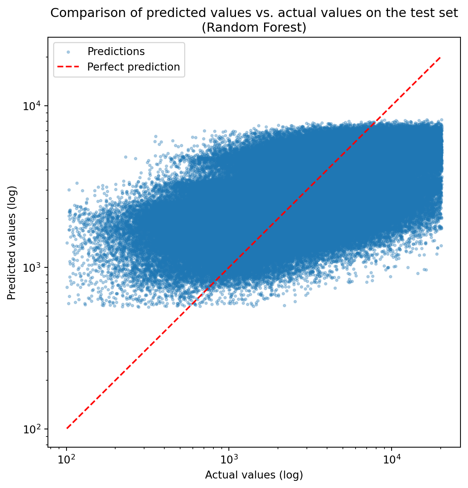

In the first part of this project, we prepared the data to train the model. We reflected on which target variable to use, how to transform features and how to use scikit-learn tools for pipeline construction. Now, we are going to train a Random Forest model, covering both the theoretical background and its implementation.
Random Forests (RF) is a powerful and widely used ensemble method for classification and regression tasks. It combines the simplicity of decision trees and the sampling of observations and variables with the power of aggregation to improve predictive performance and reduce the risk of overfitting.
An Insee working document on ensemble methods is available here. If you are unfamiliar with random forests, we recommend reading this document before processing.
1 Concepts of Random Forests
Random Forests extend bagging by introducing an additional level of randomness: at each node, the splitting rule is determined using only a randomly selected subset of features. This further reduces correlation between trees, thereby lowering the variance of the aggregated model’s predictions.
So, RF rely on three key elements : building aggregated regression or classification trees, with a randomized subset of features and a bootstrapsample - a random sample drawn with or without replacement from the original dataset, typically of the same size.
You need to select several hyperparameters for training (we cover the most important ones here) :
Number of trees : this hyperparameter must be tuned - too few trees lead to higher prediction error, while too many trees increase computational time;
Number of randomly sampled candidate features : use sqrt or log2 to ensure the RF algorithm works well;
Data sample rate : useful to speed up training on large dataset, otherwise keep it close to 1.0;
Minimum number of observation per leaf (terminal node) : setting a higher value can reduce training time, generally without any performance loss.
For more information, you can read the paragraph on RF hyperparameters here
2 Exercice 4: Train your first Random Forest model
ImportantFallback code
In case you start from here, here is the parameters you need from past sections :
Code
import pandas as pdimport numpy as npfrom sklearn.preprocessing import OneHotEncoder, FunctionTransformerfrom sklearn.compose import ColumnTransformer, TransformedTargetRegressorfrom sklearn.ensemble import RandomForestRegressorfrom sklearn.pipeline import PipelineRANDOM_STATE =202605def log_transform(y):return np.log10(y)def inverse_log_transform(y):return10** yy_transformer = FunctionTransformer( func=log_transform, inverse_func=inverse_log_transform)def date_to_days(X: pd.Series, ref_date: pd.Timestamp):# converts a date to a difference to ref_date : diff_dt = pd.to_datetime(X) - ref_date# Extract days part from datetime object diff_dt = diff_dt.dt.days# Transform it from a Pandas series to a Numpy nd array, used by scikit learn for input diff_dt = diff_dt.to_numpy().reshape(-1, 1)return diff_dtdate_transformer = FunctionTransformer( date_to_days, kw_args={"ref_date": pd.Timestamp('2010-01-01 00:00')} )preprocessor = ColumnTransformer( transformers=[ ("cat", OneHotEncoder(handle_unknown="ignore"), ["prop_type", "prop_year_harm_10"]), # one-hot encoder on feature ("dat", date_transformer, "trans_date") # feature time since 01-01-2010 ], remainder="passthrough"# to keep features not transformed)rf_params = {"n_estimators": 100,"max_depth": 5,"max_features": "sqrt","min_samples_split": 2,"min_samples_leaf": 10,"random_state": RANDOM_STATE,"oob_score": True,"n_jobs": -1, # The number of jobs to run in parallel, -1 using all processors}rf_pipeline = Pipeline([ ('preprocessing', preprocessor), ('RF', RandomForestRegressor(**rf_params))])model = TransformedTargetRegressor( regressor=rf_pipeline, transformer=y_transformer)
Load the train and test datasets. For convience and for a start, drop categorical and date feature prop_type and trans_date.
TipHint
Remember : in the Preprocessing section, we created the training sets X_train and y_train.
See the solution
# Defining train and test setsX_train = pd.read_parquet("https://minio.lab.sspcloud.fr/projet-funathon/2026/project1/data/2_preprocessing/X_train.parquet")X_test = pd.read_parquet("https://minio.lab.sspcloud.fr/projet-funathon/2026/project1/data/2_preprocessing/X_test.parquet")X_train = X_train.drop(columns=["prop_type", "trans_date"])X_test = X_test.drop(columns=["prop_type", "trans_date"])y_train = pd.read_parquet('https://minio.lab.sspcloud.fr/projet-funathon/2026/project1/data/2_preprocessing/y_train.parquet')["price_sqm"]y_test = pd.read_parquet('https://minio.lab.sspcloud.fr/projet-funathon/2026/project1/data/2_preprocessing/y_test.parquet')["price_sqm"]
Using the RandomForestRegressor class from the scikit-learn package and its documentation, define a basic model with the following hyperparameters:
n_estimators=50
max_features="sqrt"
min_samples_leaf=10
oob_score=True
n_jobs=-1
verbose=2
Note: All parameters of RandomForestRegressor have a default value - you only need to explicitly pass the ones you wish to override. Have a careful look at the various hyperparameters in the documentation. Do you understand what they do? If no, you can read the paragraph on RF hyperparameters here.
See the solution
from sklearn.ensemble import RandomForestRegressor# create RandomForestRegressor instance with selected hyperparametersrf = RandomForestRegressor( n_estimators=50, max_features="sqrt", min_samples_leaf=10, oob_score=True# for calculating total oob error for the RF)
You will now train the model. Since it is your very first model, we simplify things in two ways. First, we will drop the trans_date and prop_type features. Second, we will work with the non transformed target (i.e. price/sqm) rather than the transformed target (i.e. log price/sqm) defined at the end of the pre-processing. We will come back to these two points later.
Train the model with the non-transformed target using the training data (NOT the test data). It should take a few minutes to train.
See the solution
# Train the modelrf.fit(X_train, y_train)
Print the Out-of-Bag error (the concept of OOB error will be covered in the next exercise).
Important
Scikit-learn distinguishes parameters from fitted attributes. Here, to access the attributes sent back by the training phase listed in the documentation, we need to search for the oob_score_ attributes of the random forest.
See the solution
print(f"OOB Score : {rf.oob_score_}")
OOB Score : 0.27056012297347365
Now, calculate the mean squared error of the model on the test set - that is, how far off the prediction are from the actual values.
Note that this is just an illustration of the evaluation process. More details on metrics will be covered in the dedicated section.
TipHint
You will need to use the predict method of the model (see the documentation). You can use the mean_squared_error function from the sklearn.metrics module. Remember to use the test set for the evaluation, NOT the training set.
See the solution
from sklearn.metrics import mean_squared_error# Predictions on train sety_pred_test = rf.predict(X_test)# Print the errorprint(f"Test - MSE: {mean_squared_error(y_test, y_pred_test)}")
Test - MSE: 7822556.939533075
Congrats 🥳! You have trained your first RF model. Now, try to find the best hyperparameters to minimize the final predicted error of the model.
3 Exercice 5: Tuning a random forest’s hyperparameters
Now that you understand what a random forest is, we will tune its hyperparameters for training. In this exercise, your aim is to train the best model for the prediction of price per square meter.
3.1 Tuning the number of trees
One easy way to determine the optimal number of trees is to use the Out-of-Bag (OOB) error - an error estimate computed on the observations that were not sampled during bootstrap and therefore not used to train each individual tree. When adding more and more trees, this OOB error starts by decreasing fast until it converges to a minimum. As a consequence, we can track how this error evolves as trees are added to choose the number of trees.
Unfortunately, with the scikit-learn’s default implementation, producing this plot is not straightforward : the training process is optimised for speed, and trees are grown in parallel, meaning intermediate OOB estimates are not natively exposed. We therefore need to write a custom function to compute and plot this convergence curve. You can see the documentation page on OOB error here.
In this exercise, will now implement a function to plot the OOB error as a function of the number of trees in a RF model. To do so, you will need to:
subsample a fraction of the dataset to reduce computation time (the dataset is large with more than 1 million of rows);
train multiple RF models with varying numbers of trees;
plot the OOB error for each RF model to visualize the convergence.
Note
For convenience and pedagogical reasons, we are still working on a subset of the features and with the non transformed target. In the real world, we would do this step with the pipeline defined at the end of the pre-processing part.
Subsample a fraction ( 0.1 ) of the df dataset to reduce computation time and define X_sub and y_sub. To stick to the characteristics of the target, stratify the sampling to the target’s distribution thanks to pandas’ qcut function.
See the solution
# Sample the train dataset using Pandas' indexy_train_df = pd.DataFrame(y_train)y_train_df["quantile"] = pd.qcut(y_train_df["price_sqm"], q=100, labels=False) ## allows to discretly cut along quantilesy_sub = y_train_df.groupby("quantile").sample(frac=0.1, random_state= RANDOM_STATE) # sampling by quantile y_sub = y_sub["price_sqm"] # converting to pandas.seriesX_sub = X_train.filter(items=y_sub.index, axis=0 ) # sampling X_train
Train multiple RF models with varying numbers of trees, using warm_start=True to avoid retraining all trees from scratch at each iteration. Keep the OOB error calculated in a list.
TipHint
As a hint, you can go to the documentation page on OOB error here.
If you need, here is the code to calculate and store the OOB score.
import warnings oob_scores = []min_estimators =5# Set this parametermax_estimators =100# Set this parametermetric ="r2"# Set the metric you want to choosewarnings.filterwarnings("ignore", message="Some inputs do not have OOB scores")# filterwarnings remove some warnings messagesfor n inrange(min_estimators, max_estimators, 10): rf.set_params(n_estimators=n) rf.fit(X_sub, y_sub)if metric =="r2": oob_scores.append((n, 1- rf.oob_score_))elif metric =="neg_root_mean_squared_error": mse = np.mean((y_sub - rf.oob_prediction_) **2) oob_scores.append((n, np.sqrt(mse)))else: mae = np.mean(np.abs(y_sub - rf.oob_prediction_)) oob_scores.append((n, mae))warnings.resetwarnings()
See the solution
import warningsmetric ="r2"min_estimators =5max_estimators =150rf = RandomForestRegressor( warm_start=True,**rf_params,)oob_scores = []warnings.filterwarnings("ignore", message="Some inputs do not have OOB scores")# filterwarnings remove some warnings messagesfor n inrange(min_estimators, max_estimators, 20): rf.set_params(n_estimators=n) rf.fit(X_sub, y_sub)if metric =="r2": oob_scores.append((n, 1- rf.oob_score_))elif metric =="neg_root_mean_squared_error": mse = np.mean((y_sub - rf.oob_prediction_) **2) oob_scores.append((n, np.sqrt(mse)))else: mae = np.mean(np.abs(y_sub - rf.oob_prediction_)) oob_scores.append((n, mae))warnings.resetwarnings()
(Optional) Using the Out-of-Bag (OOB) error, plot the convergence of the OOB error as a function rf_error_oob_plot of the number of trees.
TipHint
You need to :
subsample the inputs X and y, with a parameter subsample ;
train the RF model from 15 to 150 trees (with a gap at 5) with RandomForestRegressor with the parameter warm_start=True;
select which metric you use to calculate OOB error estimator
plot the convergence of OOB error as a function of number of trees
See the solution
import matplotlib.pyplot as pltrf_params = {"max_depth": 8,"max_features": "sqrt","min_samples_split": 5,"min_samples_leaf": 10,"random_state": RANDOM_STATE,}def rf_error_oob_plot(X_train, y_train, subsample=0.1, min_estimators=15, max_estimators=150, metric='r2',**rf_params):""" Plot error OOB convergence by the number of trees Args: X_train: features y_train: target subsample: rate of sample for X_train min_estimators: number min of trees max_estimators: number max of trees metric : 'r2', 'rmse' or 'mae' """# --- Stratified sampling of training set --- y_train_df = pd.DataFrame(y_train) y_train_df["quantile"] = pd.qcut(y_train_df["price_sqm"], q=100, labels=False) ## allows to discretly cut along quantiles y_sub = y_train_df.groupby("quantile").sample(frac=0.1, random_state= RANDOM_STATE) # sampling by quantile y_sub = y_sub["price_sqm"] # converting to pandas.series X_sub = X_train.filter(items=y_sub.index, axis=0 ) # sampling X_train# --- Training with warm start --- rf = RandomForestRegressor( oob_score=True, warm_start=True,**rf_params, ) oob_scores = [] warnings.filterwarnings("ignore", message="Some inputs do not have OOB scores")for n inrange(min_estimators, max_estimators, 5): rf.set_params(n_estimators=n) rf.fit(X_sub, y_sub)if metric =="r2": oob_scores.append((n, 1- rf.oob_score_))elif metric =="neg_root_mean_squared_error": mse = np.mean((y_sub - rf.oob_prediction_) **2) oob_scores.append((n, np.sqrt(mse)))else: mae = np.mean(np.abs(y_sub - rf.oob_prediction_)) oob_scores.append((n, mae)) warnings.resetwarnings()# Generate the "OOB error rate" vs. "n_estimators" plot. xs, ys =zip(*oob_scores) fig, ax = plt.subplots() ax.plot(xs, ys) ax.set_xlim(min_estimators, max_estimators) ax.set_xlabel("n_trees") ax.set_ylabel(f"OOB error ({metric})") plt.close(fig)return fig
You can select the number of trees (n_estimators) now, with the OOB error plot. Which number do you choose ?
3.2 Tuning all others hyperparameters with cross validation
Cross-validation is a key step in model training : it is a technique used to evaluate the model’s ability to generalize to unseendata, by splitting the dataset into multiple folds (typically 5) and iteratively using each fold as a validation set while the remaining folds are used for training. It also allows you to compare different set of hyperparameters and select the configuration that yields the best predictive performance.
Note that in the Preprocessing section, you saw how to build a Pipeline. In this exercise, we will use a Pipeline again. The first exercise didn’t use it to let you practice scikit-learn tools documented here.
For convenience, we dropped the features prop_type, trans_date and trained our model on absolute prices and not on the transformed ones. Get them back and define the new training and testing datasets X_train, X_test, y_train, y_test.
Create a dictionary with the 3 hyperparameters to test (n_estimators, max_features and min_samples_leaf) for training.
TipHint
Pay attention to hyperparameter names : when using Pipeline and TransformedTargetRegressor objects, theses names are more complex than plain RandomForestRegressor parameters names. In the previous section, we used two objects for training :
TransformedTargetRegressor to apply log transformation on the target - the corresponding parameter prefix is regressor
Pipeline to apply all preprocessing transformations and fit the model : you need to refer to the name of the random forest step (it was 'RF') For example, for the hyperparameter n_estimators, the key in the parameter dictionary must be regressor__RF__n_estimators
Using the Grid Search documentation, set up and run cross-validated hyperparameter tuning for the RF model. Note that training the model should last around 10 minutes. You can sample the dataset if you want to have a faster training.
See the solution
from sklearn.model_selection import GridSearchCV# Grid searchgrid_search = GridSearchCV( estimator=model, # it is the TransformedTargetRegressor created in the preprocessing part param_grid=param_grid, cv=4, # number of folds scoring="r2", # 'r2' or 'neg_root_mean_squared_error' or 'neg_mean_absolute_error' n_jobs=-1, verbose=1)# Traingrid_search.fit(X_train, y_train)
From the fitted grid_search object, retrieve the best hyperparameters found for the model.
Scikit-learn distinguishes original parameters from **fitted attributes with a trailing _**. The _ suffix is a consistent scikit-learn convention: any attribute that only exists after fitting ends with _ (e.g., coef_, n_features_in_, classes_). It signals “this was learned from data.”
grid_search.myfittedparam_
From the fitted grid_search object, retrieve the best model. As it has only been trained on a fraction of the training set, retrain it on the full training set. Which type is best_estimator_ attribute ?
Congrats ! You have optimized your RF model. Now, you need to evaluate its accuracy — that is, how close the model’s predictions are to the actual values..
4 Exercice 6: Evaluate the final Random Forest model
4.1 Part 1 : Calcuate the evaluation metrics
ImportantIf you’re stuck - fetch back final RF model
If you’re stuck, you can fetch back the final trained model by executing the following code. The fetched model can then be used to predict any values and evaluate it.
Now that your model has been optimized, it is time to rigorously evaluate its performance on the test set — data the model has never seen during training. This step is essential to assess how well your model generalizes to new observations.
Several metrics are commonly used to evaluate regression models:
RMSE (Root Mean Squared Error): measures the average magnitude of prediction errors, penalizing large errors more heavily;
MAE (Mean Absolute Error): measures the average absolute difference between predictions and actual values, more robust to outliers;
R² (Coefficient of Determination): measures the proportion of variance in the target explained by the model (1 = perfect fit, 0 = no better than the mean).
Compute predictions on the test set using the best model retrieved from the previous exercise.
See the solution
y_pred_test = rf_model_final.predict(X_test)
Calculate the three evaluation metrics on the test set.
TipHint
You can use mean_squared_error, mean_absolute_error, and r2_score from sklearn.metrics. To obtain RMSE from MSE, apply np.sqrt().
See the solution
from sklearn.metrics import mean_squared_error, mean_absolute_error, r2_scoreimport numpy as nprmse = np.sqrt(mean_squared_error(y_test, y_pred_test))mae = mean_absolute_error(y_test, y_pred_test)r2 = r2_score(y_test, y_pred_test)print(f"Test - RMSE : {rmse:.2f}")print(f"Test - MAE : {mae:.2f}")print(f"Test - R² : {r2:.4f}")
Test - RMSE : 2956.42
Test - MAE : 1847.72
Test - R² : 0.1918
(Optional) Plot predicted values against actual values to visually assess model quality. A well-calibrated model should have points closely aligned along the diagonal.
TipHint
Use matplotlib.pyplot to create a scatter plot of y_test against y_pred_test. Add a reference diagonal line (representing perfect predictions) using ax.plot([min, max], [min, max]).
See the solution
import matplotlib.pyplot as pltdef predicted_actual_plot(y_test, y_pred_test, model_name): fig, ax = plt.subplots(figsize=(7, 7)) ax.scatter(y_test, y_pred_test, alpha=0.3, s=5, label="Predictions") lims = [min(y_test.min(), y_pred_test.min()),max(y_test.max(), y_pred_test.max())] ax.plot(lims, lims, "r--", linewidth=1.5, label="Perfect prediction") ax.set_xlabel("Actual values (log)") ax.set_ylabel("Predicted values (log)") ax.set_title(f"Comparison of predicted values vs. actual values on the test set\n({model_name})") ax.legend() plt.xscale('log') plt.yscale('log')return figpredicted_actual_plot(y_test, y_pred_test, "Random Forest")

4.2 Part 2 : now let’s play : predict the housing price for your custom address
For the prediction, you need to create a dictionary containing all the features X. Since we have more than ten features, we simplify the exercise with a function that builds the dictionary and lets you override some of its values.
Create a function build_feature_dict that returns a dictionary of features ready for prediction.
See the solution
def build_feature_dict(loc_x, loc_y, fare_a, prop_type, feature_dict=None):"""Return a feature dict ready for the model. If `feature_dict` is provided, it is returned unchanged. Otherwise, a default dict is built from the required arguments. Args: loc_x, loc_y : () """if feature_dict isnotNone:return feature_dict _prop_type_map = {1: "House", 2: "Flat"} prop_type_str = _prop_type_map.get(prop_type, str(prop_type))return {"farea": fare_a,"trans_date": "01/02/2023","trans_year": 2023,"trans_month": 2,"prop_type": prop_type_str,"prop_year_harm_10": 1870,"prop_loc_x": loc_x,"prop_loc_y": loc_y,"has_cheating": 0,"has_elec": 2,"has_elevator": 2,"has_gas": 2,"has_mdrainage": 2,"has_rchute": 0,"has_water": 2,"n_floors": 6,"n_bath": 0,"n_eatr": 0,"n_kit8": 1,"n_kit9": 0,"n_ancrooms": 0,"n_attic": 1,"n_basmt": 1,"n_garage": 0,"n_pool": 0,"n_mrooms": 3,"n_otherannex": 0,"n_rooms": 4,"n_show": 1,"n_sink": 1,"n_slr": 2,"n_terrace": 1,"n_washr": 1,"n_wc": 1,"nth_floor": 3,"s_land_agri": 0,"s_land_artif": 0,"s_land_nat": 0,"stair": 2, }
Create another dictionary with a few example properties to run predictions on.
Now, predict the price per square meter for each example.
See the solution
import pandas as pd# Build a DataFrame with one row per address — batching is faster than# calling predict() in a loop and ensures consistent column ordering.rows = []for key, infos in prediction_examples.items(): features = build_feature_dict( loc_x=infos["loc_x"], loc_y=infos["loc_y"], fare_a=infos["fare_a"], prop_type=infos["prop_type"], ) features["adresse"] = infos["nom"] features["id"] = key rows.append(features)X_examples = pd.DataFrame(rows)# Keep metadata aside; the model only sees the feature columns it was trained on.meta_cols = ["id", "adresse"]feature_cols = [c for c in X_examples.columns if c notin meta_cols]# Predicted price per square meterpredicted_price_sqm = rf_model_final.predict(X_examples[feature_cols])results = X_examples[meta_cols].copy()results["price_per_sqm"] = predicted_price_sqm.round(0)results["surface"] = X_examples["farea"].valuesresults["total_price"] = (results["price_per_sqm"] * results["surface"]).round(0)for _, row in results.iterrows():print(f"For the property at {row['adresse']} "f"({row['surface']:.0f} sqm), the estimated price is "f"{row['price_per_sqm']:,.0f} €/sqm, "f"i.e. a total of about {row['total_price']:,.0f} €." )
For the property at 88 avenue Verdier 92120 Montrouge (80 sqm), the estimated price is 3,099 €/sqm, i.e. a total of about 247,920 €.
For the property at 3 rue Sadi Carnot 78120 Rambouillet (140 sqm), the estimated price is 2,859 €/sqm, i.e. a total of about 400,260 €.
For the property at 1 rue des arts 92700 Colombes (35 sqm), the estimated price is 4,867 €/sqm, i.e. a total of about 170,345 €.
For the property at 152 Rue de Sèvres 75015 Paris (93 sqm), the estimated price is 2,977 €/sqm, i.e. a total of about 276,861 €.
For the property at 3 rue Paul Doumer 93100 Montreuil (105 sqm), the estimated price is 2,848 €/sqm, i.e. a total of about 299,040 €.
Real life prices are far more expensive in Paris :) It’s a confirmation that the model isn’t perfect, as the gradient boosting model. The model would need to be better suited before going to production but it takes more than 2 days to really fine-tune it !
5 Summary
Congrats 🎉! In this section, you have successfully
seen the foundations of random forests models,
trained a RandomForestRegressor with scikit-learn,
optimized the RandomForestRegressor parameters through a gridsearch and cross-validation,
and finally, evaluated a random Forest model for price per square meter predictions with the RMSE and MAE metrics.
You can now have a look at the gradient boosting model. Once you have trained both model, you can have a closer look at metrics with the metrics section.